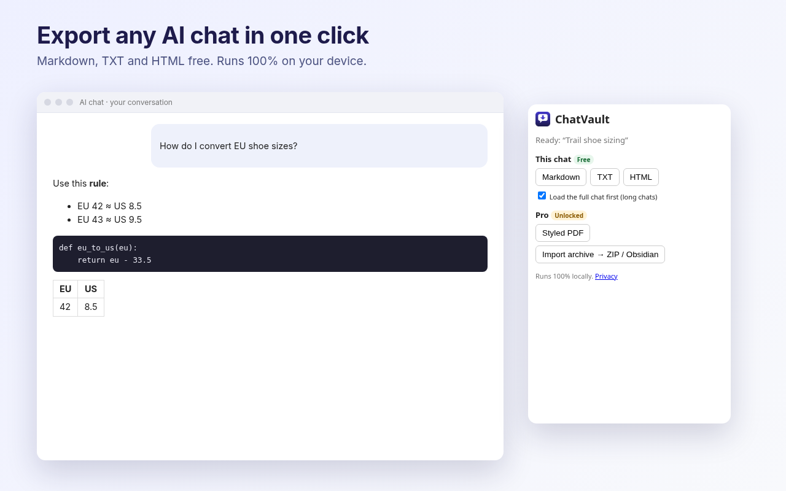

ChatVault Exporter is a Chrome extension that exports the chat you're viewing on ChatGPT, Claude or Gemini to Markdown, plain text or HTML, for free. Pro adds styled PDFs and turns your official data export into a tidy ZIP or Obsidian vault.

Free
Export the current chat to Markdown, TXT or HTML
Keeps code blocks, tables, lists and links intact
ChatVault Pro: $3/month, or ChatVault Pro (Yearly): $24/year
Styled, print-ready PDF
Import your official ChatGPT, Claude or Gemini (Google Takeout) export and get one Markdown note per chat with front-matter and an index